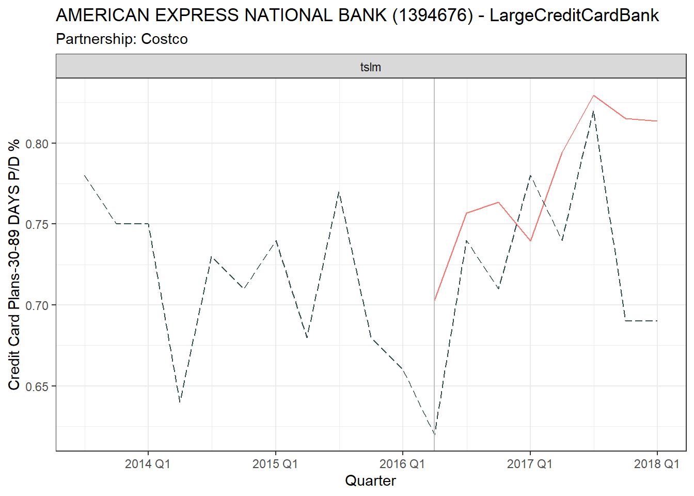
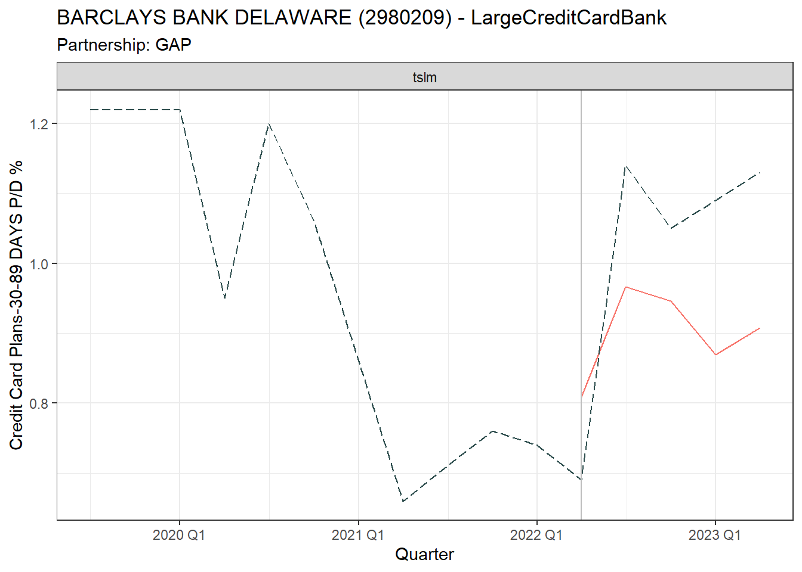

To determine the normal return we can adopt the market model (MacKinlay 1997)\[
D_{it} = \alpha_i + \beta_i D_{gt} + \epsilon_{it}
\]
And the AR is the Observed Return - Predicted Return \[
AR_{it} = D_{it} – (\alpha_i + \beta_i D_{gt})
\]
Where:
\(D_{it}\) is Credit Card Plans-30-89 DAYS P/D %\(i\) at time \(t\), \(\alpha_i\) is the firm-specific intercept, \(\beta_i\) is the coefficient measuring the sensitivity of firm value \(i\) to the group \(g\), \(D_{gt}\) is the group Credit Card Plans-30-89 DAYS P/D % at time \(t\), and \(\varepsilon_{it}\) is the error term for \(i\) at time \(t\).
As outlined in Section 5.1, we have split our data into estimation and observation periods. For firms that do not have partnership events, the full data series is used in the estimation period. For firms with partnership events the estimation period is up to the quarter before each event.
If the market model demonstrates a robust fit with the estimation data, this instils confidence in our ability to forecast the “normal” return using the unseen data from the observation period.
Figure 6.1 displays fitted vs actual results for a sub-set of firms. The Intercept and Coefficient is displayed in Table 6.2. The model is
In Table 6.2 we can see the standard error of UBPRE524.group.log.diff is small relative to its estimate indicating a precise estimate. A small p-value (typically <0.05) suggests strong evidence against the null hypothesis, indicating that UBPRE524.group.log.diff is statistically significant.
bank <-"CITIBANK"m_table |>filter(grepl(bank,BankName)) |> dplyr::select(tslm) |>gg_tsresiduals() plot_cc_measures(bank, estimation_data,ubpr_labels)
Figure 6.2: The time plot of the residuals shows that the variation of the residuals is relatively constant but with one significant outlier. The acf shows residuals are uncorrelated, and the residuals look normal with the exception of the outlier.
Figure 6.3: Explaining the outlier: Delinquency dropped at a time when CITIBANK’s credit card portfolio became a larger business concern (c). The borrowers added appear to be less risky as we see the unused proportion go from below 10% to over 40% in (b)
Code
bank <-"SYNCHRONY"m_table |>filter(grepl(bank,BankName)) |> dplyr::select(tslm) |>gg_tsresiduals() plot_cc_measures(bank, estimation_data,ubpr_labels)
Figure 6.4: The time plot of the residuals shows a couple of outliers at the start of the time period and in 2018 Q1. The acf shows residuals are uncorrelated, and the residuals look normal with the exception of the outliers.
bank <-"BARCLAYS"m_table |>filter(grepl(bank,BankName)) |> dplyr::select(tslm) |>gg_tsresiduals() plot_cc_measures(bank, estimation_data,ubpr_labels)
Figure 6.6: The time plot of the residuals shows that the variation of the residuals is relatively constant up until the onset of the COVID-19 pandemic in 2020; the model needs more information to account for this period. The acf shows residuals are uncorrelated
bank <-"CAPITAL ONE"m_table |>filter(grepl(bank,BankName)) |> dplyr::select(tslm) |>gg_tsresiduals() plot_cc_measures(bank, estimation_data, ubpr_labels)
Figure 6.10: The time plot of the residuals shows that the variation of the residuals is relatively constant. The residuals look normal with the exception of the outliers. The acf shows significant correlation every 2 lags indicating the model has not fully captured the underlying data patterns.
The sub-set of banks analysed in Section 6.2.2 did not exhibit significant autocorrelation.
Table 6.3 lists banks where we reject the null hypothesis of the Ljung–Box test, indicating the presence of significant autocorrelation in the residuals.
Banks not listed have residuals that are indistinguishable from a white noise series i.e. have uncorrelated observations and with constant variance.
Ljung–Box results where P-value < Significance Level of 0.05
6.3 Time Series Cross-Validation
One approach to evaluate the predictive performance of our model is to use One-step ahead cross-validation, also known as walk-forward validation, which is specifically designed for time series. This approach involves progressively moving forward in time, making predictions one step ahead. To quantify the accuracy of predictions made during this process, the Root Mean Square Error (RMSE) and Mean Absolute Error (MAE) is commonly used. RMSE measures the average magnitude of the errors between the predicted and actual values, giving more weight to larger errors due to its squaring component. MAE is the average of the absolute differences between the predicted values and actual values so is not as sensitive to outliers.
The results Table 6.4 show that the RMSE and MAE of the cross-validated models (CV) closely matches the RMSE and MAE observed in the initial model evaluation (Training). This indicates that the model is generalising well to unseen data and not overfitting.
Table 6.4: Comparing Accuracy Metrics for Training and Cross-Validation data
(a)
Accuracy Metrics on Training and Cross Validation data for sub-set of
banks
(b)
Mean Accuracy Metrics for our sub-set of banks
(c)
Mean Accuracy Metrics across all banks
6.4 Prediction

Figure 6.12: Prediction vs. Observed Event
Figure 6.13: Prediction vs. Observed Event
Figure 6.14: Prediction vs. Observed Event
Figure 6.15: Prediction vs. Observed Event
Figure 6.16: Prediction vs. Observed Event

Figure 6.17: Prediction vs. Observed Event
6.5 Abnormal Results
Code
print_ar(result, "Costco", "AMERICAN EXPRESS NATIONAL BANK (1394676)")print_ar(result, "Costco", "CITIBANK, N.A. (476810)")print_ar(result, "Walmart", "SYNCHRONY BANK (1216022)")print_ar(result, "Walmart", "CAPITAL ONE, NATIONAL ASSOCIATION (112837)")print_ar(result, "GAP", "SYNCHRONY BANK (1216022)")print_ar(result, "GAP", "BARCLAYS BANK DELAWARE (2980209)")
---title: "Market Model"format: html---```{r}#| warning: false#| echo: falsesource('functions.R')target_label =credit_card.target_label()ubpr_labels =credit_card.udpr()```## Specification {#sec-model-market}To determine the normal return we can adopt the market model [@MacKinlay1997]$$D_{it} = \alpha_i + \beta_i D_{gt} + \epsilon_{it}$$And the AR is the Observed Return - Predicted Return$$AR_{it} = D_{it} – (\alpha_i + \beta_i D_{gt})$$Where:$D_{it}$ is *`r target_label`* $i$ at time $t$, \$\alpha_i$ is the firm-specific intercept, \$\beta_i$ is the coefficient measuring the sensitivity of firm value $i$ to the group $g$,\$D_{gt}$ is the group *`r target_label`* at time $t$, and \$\varepsilon_{it}$ is the error term for $i$ at time $t$.## Model Results```{r}#| warning: falsemodel_data <-get_model_data()data <- model_data$all_dataestimation_data <- model_data$estimation_dataobservation_data <- model_data$observation_datapartner_banks <-credit_card.partnerships.long()market_formula <-"UBPRE524.diff ~ UBPRE524.group.log.diff"m_table <- estimation_data |>fill_gaps() |>model(tslm =TSLM(as.formula(market_formula)))augmented_data <- m_table |>augment()```### Estimated FitAs outlined in @sec-data-split, we have split our data into estimation and observation periods. For firms that do not have partnership events, the full data series is used in the estimation period. For firms with partnership events the estimation period is up to the quarter before each event. If the market model demonstrates a robust fit with the estimation data, this instils confidence in our ability to forecast the "normal" return using the unseen data from the observation period.@fig-plot-fit displays fitted vs actual results for a sub-set of firms. The Intercept and Coefficient is displayed in @tbl-coef-market. The model is ```{r}#| warning: false#| label: fig-plot-fit#| fig-cap: "Fitted vs. Observed for estimation data on sub-set of firms"#| fig-height: 10augmented_data |>filter(BankName %in%unique(observation_data$BankName)) |>plot_model_fit("UBPRE524.diff")``````{r}#| warning: false#| label: tbl-market-aicc#| tbl-cap: AICc Summary for sub-set of banksm_table |>filter(BankName %in% observation_data$BankName) |>glance() |>relocate(BankName, AICc, AIC) |> dplyr::select(-c(IDRSSD,.model))|>mutate(across(where(is.numeric), \(x) round(x,4))) |> rmarkdown::paged_table() ```In @tbl-coef-market we can see the standard error of *UBPRE524.group.log.diff* is small relative to its estimate indicating a precise estimate. A small p-value (typically <0.05) suggests strong evidence against the null hypothesis, indicating that *UBPRE524.group.log.diff* is statistically significant.```{r}#| warning: false#| label: tbl-coef-market#| tbl-cap: "Intercept and coefficients"m_table |>filter(BankName %in%unique(observation_data$BankName)) |>tidy() |> dplyr::select(BankName, term:last_col())|>mutate(across(where(is.numeric), \(x) round(x,4))) |> rmarkdown::paged_table()```### Residual diagnostics {#sec-residual-check}Residuals should have the following properties [@Hyndman2021, ch. 5.4]. Residuals:* Are uncorrelated. Correlations indicate that the model is missing information left in the residuals.* Have zero mean. If they have a mean other than zero, then the forecasts are biased.* Have constant variance i.e. does not violate "homoscedasticity" assumption.* Are normally distributed. ::: {#fig-market-checks .panel-tabset}### CITIBANK```{r}#| warning: false#| label: fig-fit-citi#| fig-subcap: #| - "The time plot of the residuals shows that the variation of the residuals is relatively constant but with one significant outlier. The acf shows residuals are uncorrelated, and the residuals look normal with the exception of the outlier." #| - "Explaining the outlier: Delinquency dropped at a time when CITIBANK's credit card portfolio became a larger business concern (c). The borrowers added appear to be less risky as we see the unused proportion go from below 10% to over 40% in (b)"bank <-"CITIBANK"m_table |>filter(grepl(bank,BankName)) |> dplyr::select(tslm) |>gg_tsresiduals() plot_cc_measures(bank, estimation_data,ubpr_labels)```### SYNCHRONY```{r}#| warning: false#| label: fig-fit-sync#| fig-subcap: #| - "The time plot of the residuals shows a couple of outliers at the start of the time period and in 2018 Q1. The acf shows residuals are uncorrelated, and the residuals look normal with the exception of the outliers." #| - "Comparative credit card portfolio variables"bank <-"SYNCHRONY"m_table |>filter(grepl(bank,BankName)) |> dplyr::select(tslm) |>gg_tsresiduals() plot_cc_measures(bank, estimation_data,ubpr_labels)```### BARCLAYS```{r}#| warning: false#| label: fig-fit-bar#| fig-subcap: #| - "The time plot of the residuals shows that the variation of the residuals is relatively constant up until the onset of the COVID-19 pandemic in 2020; the model needs more information to account for this period. The acf shows residuals are uncorrelated"#| - "Comparative credit card portfolio variables"bank <-"BARCLAYS"m_table |>filter(grepl(bank,BankName)) |> dplyr::select(tslm) |>gg_tsresiduals() plot_cc_measures(bank, estimation_data,ubpr_labels)```### AMERICAN EXPRESS```{r}#| warning: false#| label: fig-fit-ae#| fig-subcap: #| - "The acf shows significant correlation indicating the model has not fully captured the underlying data patterns. The residuals look normal."#| - "Comparative credit card portfolio variables"bank <-"AMERICAN EXPRESS NATIONAL BANK"m_table |>filter(grepl(bank,BankName)) |> dplyr::select(tslm) |>gg_tsresiduals() plot_cc_measures(bank, estimation_data,ubpr_labels)```### CAPITAL ONE```{r}#| warning: false#| label: fig-fit-cap#| fig-subcap: #| - "The time plot of the residuals shows that the variation of the residuals is relatively constant. The residuals look normal with the exception of the outliers. The acf shows significant correlation every 2 lags indicating the model has not fully captured the underlying data patterns." #| - "Comparative credit card portfolio variables"bank <-"CAPITAL ONE"m_table |>filter(grepl(bank,BankName)) |> dplyr::select(tslm) |>gg_tsresiduals() plot_cc_measures(bank, estimation_data, ubpr_labels)```:::### Residuals White NoiseThe sub-set of banks analysed in @sec-residual-check did not exhibit significant autocorrelation.@tbl-lb-market lists banks where we reject the null hypothesis of the Ljung–Box test, indicating the presence of significant autocorrelation in the residuals. Banks not listed have residuals that are indistinguishable from a white noise series i.e. have uncorrelated observations and with constant variance.```{r}#| warning: false#| label: tbl-lb-market#| tbl-cap: Ljung–Box results where P-value < Significance Level of 0.05augmented_data |>features(.innov, ljung_box) |>mutate(across(where(is.numeric), \(x) round(x,4))) |>filter(lb_pvalue <=0.05)|> dplyr::select(BankName,lb_stat,lb_pvalue) |> rmarkdown::paged_table()```## Time Series Cross-ValidationOne approach to evaluate the predictive performance of our model is to use One-step ahead cross-validation, also known as walk-forward validation, which is specifically designed for time series. This approach involves progressively moving forward in time, making predictions one step ahead. To quantify the accuracy of predictions made during this process, the Root Mean Square Error (RMSE) and Mean Absolute Error (MAE) is commonly used. RMSE measures the average magnitude of the errors between the predicted and actual values, giving more weight to larger errors due to its squaring component. MAE is the average of the absolute differences between the predicted values and actual values so is not as sensitive to outliers.The results @tbl-market-cv show that the RMSE and MAE of the cross-validated models (CV) closely matches the RMSE and MAE observed in the initial model evaluation (Training). This indicates that the model is generalising well to unseen data and not overfitting.```{r}#| warning: false#| output: falsem_table |> fabletools::accuracy()|> readr::write_csv("data/results/estimate_market_metrics.csv")init =8model_name ="tslm"nested_data <-nest_data_for_step_cv(estimation_data)results <- nested_data |>filter(Quarter_Index > init & Quarter_Index !=max(Quarter_Index)) |>mutate(model =map(data, ~lm(formula =as.formula(market_formula), data = .x, REML =TRUE)), augmented_data =map2(model, new_data, ~tryCatch({augment(.x, newdata = .y, allow.new.levels =TRUE) }, error =function(e) {message("Error in augment function: ", e$message)NULL })))unnested_results <- results |>unnest(augmented_data) |> dplyr::select(BankName:last_col()) |> dplyr::group_by(BankName, BankType) |>mutate(RMSE = Metrics::rmse(UBPRE524.diff, .fitted),MAE = Metrics::mae(UBPRE524.diff, .fitted)) |>summarise(RMSE =mean(RMSE,na.rm =TRUE),MAE =mean(MAE,na.rm =TRUE)) |>add_column(.type ="CV", .model = model_name) unnested_results |> dplyr::select(BankName, BankType, .model, .type, RMSE, MAE) |> readr::write_csv(glue("data/results/tscv/estimate_tscv_market_metrics.csv"))``````{r}#| warning: false#| label: tbl-market-cv#| tbl-cap: Comparing Accuracy Metrics for Training and Cross-Validation data#| tbl-subcap: #| - Accuracy Metrics on Training and Cross Validation data for sub-set of banks#| - Mean Accuracy Metrics for our sub-set of banks#| - Mean Accuracy Metrics across all banksval_results <-get_summary_validation.market(unique(observation_data$BankName))val_results$tbl1 |> rmarkdown::paged_table()val_results$tbl2 |> rmarkdown::paged_table()val_results$tbl3 |> rmarkdown::paged_table()```## Prediction ```{r}#| warning: false#| echo: false#| results: hide#| fig-keep: all#| label: fig-pred-observed-market#| fig-cap: "Prediction vs. Observed Event"get_prediction <-function(bank, partner, all_data, models) { bank_data <- all_data |>filter(BankName == bank) event_data <- bank_data |>filter(!!as.name(partner) >=0) |>head(8) fcast <- models |>filter(BankName == bank) |>forecast(new_data= event_data, bootstrap=TRUE, times =5000)original_scale(fcast, all_data) |>add_column(Partner = partner)}result <-map2(partner_banks$Bank, partner_banks$Partner, get_prediction, data, m_table) |>list_rbind() |>left_join(data |> dplyr::select(observed = UBPRE524.Value),by =join_by(IDRSSD, BankName, BankType, Quarter) ) |>as_tibble() |> dplyr::select(Partner, BankName, Quarter, observed, predicted,.model) map2(partner_banks$Bank, partner_banks$Partner, plot_prediction, result, data) ```## Abnormal Results ```{r}#| warning: false#| label: tbl-abnormal-market#| tbl-cap: "Credit Card Plans-30-89 DAYS P/D %: Abnormal Returns (original scale)"#| tbl-subcap: #| - "Costco (Old) - AMERICAN EXPRESS NATIONAL BANK (1394676)"#| - "Costco (New) - CITIBANK, N.A. (476810)"#| - "Walmart (Old) - SYNCHRONY BANK (1216022)"#| - "Walmart (New) - CAPITAL ONE, NATIONAL ASSOCIATION (112837)"#| - "GAP (Old) - SYNCHRONY BANK (1216022)"#| - "GAP (New) - BARCLAYS BANK DELAWARE (2980209)"print_ar(result, "Costco", "AMERICAN EXPRESS NATIONAL BANK (1394676)")print_ar(result, "Costco", "CITIBANK, N.A. (476810)")print_ar(result, "Walmart", "SYNCHRONY BANK (1216022)")print_ar(result, "Walmart", "CAPITAL ONE, NATIONAL ASSOCIATION (112837)")print_ar(result, "GAP", "SYNCHRONY BANK (1216022)")print_ar(result, "GAP", "BARCLAYS BANK DELAWARE (2980209)")```